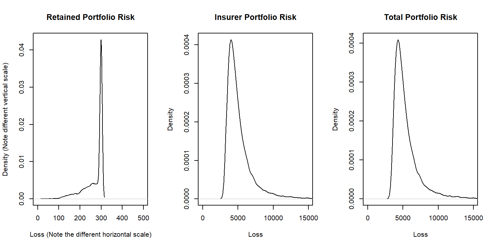

Chapter 10 Gestión de Carteras de Seguros incluyendo Reaseguro
Contenido. Una cartera de seguros es simplemente un conjunto de contratos de seguros. Para ayudar a gestionar la incertidumbre de la cartera, este capítulo
- cuantifica coberturas inusualmente extremas examinando las colas de la distribución,
- cuantifica el riesgo global introduciendo indicadores conocidos como medidas de riesgo, y
- analiza las opciones de repartir el riesgo de la cartera a través del reaseguro, la contratación de cobertura de seguro por la propia entidad aseguradora.
10.1 Introducción a las Carteras de Seguros
La mayoría de nuestros análisis en los capítulos previos se han realizado a nivel de contrato, definido como un acuerdo entre el tomador y el asegurador. Los aseguradores tienen, y gestionan, carterasuna colección de contratos que son simplemente conjuntos de pólizas. Como en otras áreas financieras, existen elecciones sobre los procesos de gestión que se producen solo a nivel de cartera. Por ejemplo, las decisiones estratégicas no ocurren a nivel de contrato. Se producen en la sala de reuniones, donde los gestores revisan los datos disponibles y posiblemente pongan en marcha nuevas estrategias. Desde la perspectiva de la cartera, los aseguradores quieren planear su capacidad, establecer políticas de gestión, y equilibrar el mix de productos que se distribuyen para aumentar los ingresos mientras se controla la volatilidad.
Conceptualmente, uno puede pensar en una compañía de seguros como nada más que un conjunto, o cartera, de contratos de seguros. En el Capítulo 5 se ha aprendido sobre la modelización de carteras de seguros como la suma de contratos individuales, teniendo en cuenta hipótesis de independencia entre los contratos. Teniendo en cuenta su importancia, este capítulo se centra directamente en las distribuciones de carteras.
Las carteras de seguros representan las obligaciones de los aseguradores y, por ello, se está particularmente interesado en las probabilidades de grandes riesgos, dado que ellos representan grandes obligaciones o coberturas extraordinarias. Para formalizar este concepto se introduce el concepto de distribución de colas pesadas en la Sección 10.2.
Las carteras de seguros representan las obligaciones de la compañía y por ello los aseguradores mantienen una cantidad equivalente de activos para cumplir con dichas obligaciones. Las Medidas de riesgo, introducidas en la Sección 10.3, resumen la distribución de la cartera de seguros y son usadas para cuantificar la cantidad de activos que un asegurador necesita tener para cumplir con sus obligaciones.
En la Sección 3.4 se aprendieron mecanismos que los tomadores usan para repartir riesgos como franquicias y límites de cobertura. De la misma forma, los aseguradores usan mecanismos similares para repartir los riesgos de cartera. Compran protecciones del riesgo mediante el reaseguro, una compañía de seguros para los aseguradores. Este reparto del riesgo de cartera de seguros se describe en la Sección ??.
10.2 Colas de las Distribuciones
En esta sección, se aprende como:
- Describir una distribución de cola pesada intuitivamente.
- Clasificar la pesadez de las colas de una distribución basada en los momentos.
- Comparar las colas de dos distribuciones.
En 1998 cayó lluvia helada en el este de Ontario, al suroeste de Canadá, durante seis días. El suceso supuso el doble de precipitaciones experimentadas en la zona en cualquier tormenta de hielo anterior, y provocó una catástrofe que derivó en más de 840,000 reclamaciones de seguros. Esta cifra es un 20\(\%\) superior a los siniestros causados por el Huracán Andrew – uno de los mayores desastres naturales en la historia de Norteamérica. La catástrofe supuso aproximadamente 1.44 miles de millones de dólares Canadienses en acuerdos de seguros lo que representa la mayor cantidad para pérdidas en la historia de Canadá. Este no es un ejemplo aislado – sucesos catastróficos similares que causaron pérdidas extremas para el seguro son los Huracanes Harvey y Sandy, el terremoto y tsunami japonès de 2011, y otros.
En el contexto asegurador, las pérdidas muy grandes y poco frecuentes que afectan a las carteras convirtiéndose en siniestros representan habitualmente la mayor parte de las indemnizaciones pagadas por las compañías aseguradoras. Dichas pérdidas, también llamadas ‘extremas’, son modelizadas cuantitativamente mediante las colas de las distribuciones de probabilidad asociadas. Desde el punto de vista de la modelización cuantitativa, confiar en modelos probabilísticos que no recogen bien el comportamiento de las colas puede resultar desalentador. Por ejemplo, los periodos de crisis financera pueden aparecer con mayor frecuencia de loesperado, y las pérdidas en seguros pueden producirse con mayor severidad. Por tanto, el estudio del comportamiento probabilístico en las colas de los modelos actuariales es de suma importancia en el contexto moderno de la gestión cuantitativa del riesgo. Por esta razón, esta sección se dedica a la introduccción de unas pocas nociones matemáticas que caracterizan el peso de la cola de variables aleatorias (v.a.). La aplicación de esas nociones será útil en la construcción y selección de modelos apropiados con las propiedades matemáticas deseadas en las colas, que serán adecuadas para el alcance de determinados objetivos.
Formalmente, se define \(X\) como las obligaciones (aleatorias) que pueden derivarse de un conjunto (cartera) de pólizas de seguros. Se está especialmente interesado en estudiar la cola derecha de la distribución de \(X\), que representa la ocurrencia de grandes pérdidas. Informalmente, una v.a. se define como de cola pesada si las probabilidades altas se asignan a los valores grandes. Destacar que esto no significa que las funciones de densidad/masa de probabilidad vayan creciendo cuando el valor de v.a. tienda a infinito. De hecho para una v.a. continua, la pdffunción de densidad de probabilidad/pmffunción de masa de probabilidad debe disminuir en el infinito para garantizar que la probabilidad total es igual a uno. En cambio, lo que preocupa es la tasa de decrecimiento de la función de probabilidad. Es más probable que se produzcan resultados no deseados en carteras de seguros descritas por una v.a. de pérdidas con cola (derecha) pesada. El peso de la cola puede ser un concepto absoluto o relativo. Específicamente, desde el primer punto de vista, se puede considerar que una v.a. es de cola pesada si se cumplen ciertas propiedades matemáticas de la distribución de probabilidad. Desde el segundo punto de vista, se puede decir que la cola de una distribución es más pesada que la otra si algunas medidas de cola son mayores/menores.
Se han propuesto diferentes enfoques cuantitativos para clasificar y comparar el peso de las colas. Entre ellos, la función de supervivenciaUno menos la función de distribución. Proporciona la probabilidad de que la v.a. supere un determinado valor sirve como base de análisis. A continuación, se introducen dos métodos de clasificación de colas simples pero muy utilizados, basados en el comportamiento de la función de supervivencia de \(X\).
10.2.1 Clasificación Basada en los Momentos
Una forma de clasificar el peso de la cola de una distribución es evaluando la existencia de momentos ordinarios o respecto al origen. Ya que nuestro mayor interés recae en las colas derechas de las distribuciones, de ahora en adelante se asume que la obligación o pérdida v.a. \(X\) es positiva. Al principio, el momento ordinario \(k-\)th de una v.a. \(X\) continua, introducido en la Sección 3.1, puede calcularse como
\[\begin{eqnarray*} \mu_k' &=& k \int_0^{\infty} x^{k-1} S(x) dx, \\ \end{eqnarray*}\]
donde \(S(\cdot)\) es la función de supervivencia de \(X\). Esta expresión pone de manifiesto que la existencia de los momentos ordinarios depende del comportamiento asintótico de la función de supervivencia en el infinito. Dicho de otro modo, cuanto más rápido tiende a cero la función de supervivencia, mayor será el orden del momento finito (k) que la v.a. asociada posee. Se puede interpretar \(k^{\ast}\) como el mayor valor de k para que el momento sea finito. Formalmente, se define \(k^{\ast}:=\sup\{k > 0:\mu_k'<\infty \}\), donde \(sup\) representa el elemento supremo. Esta observación nos conduce al método de clasificación del peso de las colas basado en los momentos, que se define formalmente a continuación.
Definición 10.1. Consideremos una variable aleatoria de pérdidas positiva \(X\).
- Si todos los momentos ordinarios positivos existen, llámemosle el máximo orden del momento finito \(k^{\ast}=\infty\), entonces \(X\) se denomina de cola ligera en base al método de los momentos.
- Si \(k^{\ast} < \infty\), entonces \(X\) se denomina de cola pesada en base al método de los momentos.
- Además, para dos variables aleatorias de pérdidas positivas \(X_1\) y \(X_2\) con máximos órdenes del momento \(k^{\ast}_1\) y \(k^{\ast}_2\) respectivamente, se dice que \(X_1\) tiene una cola (derecha) más pesada que \(X_2\) si \(k^{\ast}_1\leq k^{\ast}_2\).
La primera parte de la Definición 10.1 es un concepto absoluto de peso de cola, mientras que la segunda parte es un concepto relativo de peso de cola que compara las colas (derechas) entre dos distribuciones. A continuación, se presentan unos cuantos ejemplos que ilustran las aplicaciones del método basado en los momentos para comparar el peso de las colas.
Ejemplo 10.1.1. Naturaleza de la cola ligera de la distribución gamma. Sea \(X\sim gamma(\alpha,\theta)\), con \(\alpha>0\) y \(\theta>0\), entonces para todo \(k>0\), demuestra que \(\mu_k' < \infty\).
Muestra solución del ejemplo
Ejemplo 10.1.2. Naturaleza de la cola ligera de la distribución Weibull. Sea \(X\sim Weibull(\theta,\tau)\), con \(\theta>0\) y \(\tau>0\), entonces para todo \(k>0\), demuestra que \(\mu_k' < \infty\).
Muestra solución del ejemplo
Las distribuciones gamma y Weibull se utilizan ampliamente en la práctica actuarial. Las aplicaciones de estas dos distribuciones son extensas e incluyen, entre otras, la modelización de la severidad de los siniestros de seguros, la evaluación de solvencia, reservas, la aproximación del riesgo agregado o conjunto, e ingeniería de fiabilidad y análisis de errores o fallos. Hasta ahora se han visto dos ejemplos de aplicación del método basado en los momentos para analizar distribuciones de cola ligera. A continuación se presenta un ejemplo de cola pesada.
Ejemplo 10.1.3. Naturaleza de la cola pesada de la distribución de pareto. Sea \(X\sim Pareto(\alpha,\theta)\), con \(\alpha>0\) y \(\theta>0\), entonces para \(k>0\)
\[\begin{eqnarray*} \mu_k^{'} &=& \int_0^{\infty} x^k \frac{\alpha \theta^{\alpha}}{(x+\theta)^{\alpha+1}} dx \\ &=& \alpha \theta^{\alpha} \int_{\theta}^{\infty} (y-\theta)^k {y^{-(\alpha+1)}} dy. \end{eqnarray*}\]
Se considera una integración similar:
\[\begin{eqnarray*} g_k:=\int_{\theta}^{\infty} {y^{k-\alpha-1}} dy=\left\{ \begin{array}{ll} <\infty, & \hbox{for } k<\alpha;\\ =\infty, & \hbox{for } k\geq \alpha. \end{array} \right. \end{eqnarray*}\]
Mientras tanto,
\[\lim_{y\rightarrow \infty} \frac{(y-\theta)^k {y^{-(\alpha+1)}}}{y^{k-\alpha-1}}=\lim_{y\rightarrow \infty} (1-\theta/y)^{k}=1.\]
La aplicación del teorema de comparación de límites para integrales impropias indica que \(\mu_k'\) es finita si y solo si \(g_k\) es finita. Por tanto se puede concluir que los momentos ordinarios de una rv Pareto existen solo hasta \(k<\alpha\), es decir, \(k^{\ast}=\alpha\), y de este modo la distribución es de cola pesada. Aún más, el máximo orden del momento finito depende solo del parámetro de forma \(\alpha\) y es una función creciente de \(\alpha\). En otras palabras, en base al método de los momentos, el peso de la cola de una v.a. Pareto cambia únicamente en función de \(\alpha\) – cuanto más pequeño es el valor de \(\alpha\), más fuerte es el peso de la cola. Dado que \(k^{\ast}<\infty\), la cola de una distribución de Pareto es más pesada que la de las distribuciones gamma y Weibull.
Se concluye esta sección con una discusión abierta sobre las limitaciones del método basado en los momentos. A pesar de su implementación sencilla y de su interpretación intuitiva, existen determinadas situaciones en las que la aplicación del método basado en los momentos no es factible. Primero, en el caso de los modelos probabilísticos más complejos, el \(k\)-th momento ordinario puede no ser simple de derivar, y de este modo, la identificación del máximo orden del momento finito puede convertirse en un desafío. Segundo, el método basado en los momentos no cumple bien con el cuerpo principal de la teoría de la cola pesada definido en la literatura. Específicamente, la existencia de las funciones generadoras de momentos es sin duda el método más popular para clasificar la cola pesada frente a la cola ligera dentro de la comunidad de los actuarios académicos. Sin embargo, para algunas v.a. como la v.a. lognormal, sus funciones generadoras de momentos no existen, incluso cuando todos los momentos positivos son finitos. En esos casos, las aplicaciones de los métodos basados en los momentos pueden conduir a diferentes evaluaciones del peso de la cola. Tercero, cuando se necesita comparar el peso de la cola entre dos distribuciones de cola ligera para las cuales existen todos los momentos positivos, el método basado en los momentos no es informativo (ver, por ejemplo, Ejemplos 10.1.1 y 10.1.2).
10.2.2 Comparación basada en el comportamiento de colas con límites
Para resolver las dificultades anteriormente comentadas en relación al uso del método de clasificación basado en los momentos, una aproximación alternativa para comparar el peso de las colas es estudiar directamente los límites de las funciones de supervivencia.
Definición 10.2. Para dos v.a. \(X\) e \(Y\), sea
\[ \gamma:=\lim_{t\rightarrow \infty}\frac{S_X(t)}{S_Y(t)}. \] Se dice que
- \(X\) tiene una cola derecha más pesada que \(Y\) si \(\gamma=\infty\);
- \(X\) e \(Y\) son proporcionalmente equivalentes en la cola derecha si \(\gamma =c\in \mathbf{R}_+\);
- \(X\) tiene una cola derecha más ligera que \(Y\) si \(\gamma=0\).
Ejemplo 10.1.4. Comparación de las distribuciones Pareto y Weibull. Sea \(X\sim Pareto(\alpha, \theta)\) e \(Y\sim Weibull(\tau, \theta)\), para \(\alpha>0\), \(\tau>0\), y \(\theta>0\). Demostrar que la distribución Pareto tiene una cola derecha más pesada que la Weibull.
Muestra solución del ejemplo
Para algunas distribuciones para las que las funciones de supervivencia no admiten expresiones explícitas, se puede encontrar la siguiente fórmula alternativa:
\[\begin{eqnarray*} \lim_{t\to \infty} \frac{S_X(t)}{S_Y(t)} &=& \lim_{t \to \infty} \frac{S_X^{'}(t)}{S_Y^{'}(t)} \\ &=& \lim_{t \to \infty} \frac{-f_X(t)}{-f_Y(t)}\\ &=& \lim_{t\to \infty} \frac{f_X(t)}{f_Y(t)}. \end{eqnarray*}\]
dado que existen las funciones de densidad.
Ejemplo 10.1.5. Comparación de las distribuciones Pareto y gamma. Sea \(X\sim Pareto(\alpha, \theta)\) e \(Y\sim gamma(\alpha, \theta)\), para \(\alpha>0\) y \(\theta>0\). Demostrar que la Pareto tiene una cola derecha más pesada que la gamma.
Muestra solución del ejemplo
10.3 Medidas de Riesgo
En esta sección, se aprende como:
- Definir la idea de coherencia y determinar si una medida de riesgo es o no coherente.
- Definir el valor en riesgo y calcular este valor para una distribución dada.
- Definir la cola del valor en riesgo y calcular este valor para una distribución dada.
En la sección previa, se estudian dos métodos para clasificar el peso de las colas de la distribución. Se puede afirmar que el riesgo asociado con una distribución es más peligroso que otros(asintóticamente)si la cola es más pesada. Sin embargo, saber que un riesgo es más peligroso (asintóticamente) que otros puede no ser suficiente a nivel informativo para una gestión de riesgos sofisticada, y adicionalmente, se puede estar interesado en cuantificar cuanto más lo es. De hecho, la magnitud del riesgo asociada con una distribución dada de pérdidas es un input fundamental para muchas aplicaciones de seguros, tales como la tarificación actuarial, el cálculo de reservas, el diseño de coberturas, la supervisión regulatoria de seguros, y otras.
10.3.1 Medidas de Riesgo Coherentes
Para comparar la magnitud del riesgo de una forma conveniente, se busca una función que represente la v.a. pérdida en un valor numérico indicativo del nivel de riesgo, denominada medida de riesgouna medida que resume el riesgo, o incertidumbre, de una distribución. A nivel matemático, la medida de riesgo simplemente resume la función de distribución de una v.a. mediante un solo número. Dos medidas de riesgo sencillas son la media \(\mathrm{E}[X]\) y la desviación estándar \(\mathrm{SD}(X)=\sqrt{\mathrm{Var}(X)}\). Otros ejemplos clásicos de medidas de riesgo incluyen el principio de desviación estándar
\[\begin{equation} H_{\mathrm{SD}}(X):=\mathrm{E}[X]+\alpha \mathrm{SD}(X),\text{ para } \alpha\geq 0, \tag{10.1} \end{equation}\]
y el principio de varianza \[ H_{\mathrm{Var}}(X):=\mathrm{E}[X]+\alpha \mathrm{Var}(X),\text{ para } \alpha\geq 0. \] Es sencillo comprobar que todas las funciones antes mencionadas son medidas de riesgo en las que se introduce la v.a. pérdida y las funciones generan un valor numérico. Sin embargo, la función \(H^{\ast}(X):=\alpha X^{\beta}\) para cualquier valor real \(\alpha,\beta\neq 0\), no es una medida de riesgo porque \(H^{\ast}\) produce otra v.a. en lugar de un único valor numérico.
Como las medidas de riesgo son medidas escalares que tienen como objetivo utilizar un único valor numérico para describir la naturaleza estocástica de la v.a. pérdidas, no debería sorprendernos que no haya ninguna medida de riesgo que pueda capturar toda la información de riesgo de las v.a. asociadas. Por tanto, al buscar medidas de riesgo útiles, es importante tener en cuenta que las medidas deben ser al menos
- fácilmente interpretables;
- convenientemente computables; y
- capaces de reflejar la información más crítica sobre el riesgo que sustenta la distribución de pérdidas.
En la literatura se han desarrollado varias medidas de riesgo. Desafortunadamente, no hay una mejor medida de riesgo que pueda superar a las demás, y la selección de la medida de riesgo adecuada depende principalmente de lo que se esté analizando. En este sentido, es necesario subrayar que riesgo es un concepto subjetivo, y por tanto, incluso delante del mismo problema, existen enfoques alternativos para su evaluación. Sin embargo, en aplicaciones de gestión de riesgos, existe un amplio consenso en el hecho de que las medidas de riesgo utilizadas desde un punto de vista económico deben cumplir cuatro axiomas principales que se describen con detalle a continuación. Las medidas de riesgo que satisfacen estos axiomas se denominan medidas de riesgo coherentesuna medida de riesgo que es subaditiva, monótona, tiene homgeneidad positiva, y es invariante a desplazamientos .
Consideramos a continuación una medida de riesgo \(H(\cdot)\), de forma que \(H\) es una medida de riesgo coherente si se satisfacen los siguientes axiomas.
- Axioma 1. Subaditividad: \(H(X+Y)\leq H(X)+H(Y)\). La implicación económica de este axioma es que existen beneficios de diversificación si se combinan diferentes riesgos.
- Axioma 2. Monotonicidad: si \(\Pr[X\leq Y]=1\), entonces \(H(X)\leq H(Y)\). Destacar que \(X\) e \(Y\) son v.a. que representan pérdidas, la implicación económica subyacente es que las pérdidas más altas conducen esencialmente a un mayor nivel de riesgo.
- Axioma 3. Homogeneidad positiva: \(H(cX)=cH(X)\) para cualquier constante positiva \(c\). Una implicación económica posible de este axioma es que la medida de riesgo debe ser independiente de las unidades monetarias en las que se mide el riesgo. Por ejemplo, sea \(c\) el tipo de cambio entre los dólares estadounidenses y canadienses, entonces el riesgo de pérdidas aleatorias medidas en dólares estadounidenses (es decir, X) y dólares canadienses (es decir, cX) debe ser diferente solo en términos del tipo de cambio \(c\) (es decir, \(cH(x)=H(cX)\)).
- Axioma 4. Invarianza a los desplazamientos: \(H(X+c)=H(X)+c\) para cualquier constante positiva \(c\). Si la constante \(c\) se interpreta como un efectivo libre de riesgo, este axioma indica que no se crea riesgo adicional al añadir liquidez a una cartera de seguros, y añadir un capital libre de riesgo de cuantía \(c\) puede reducir solo el riesgo en la misma cantidad.
Verificar las propiedades coherentes para algunas medidas de riesgo puede ser bastante sencillo, pero a veces puede complicarse. Por ejemplo, es sencillo comprobar que la media es una medida de riesgo coherente.
Ejemplo. La Media es una Medida de Riesgo Coherente.
Para cualquier par de v.a. \(X\) e \(Y\) con medias finitas y la constante \(c>0\),
- validación de la subaditividad: \(\mathrm{E}[X+Y]=\mathrm{E}[X]+\mathrm{E}[Y]\);
- validación de la monotonicidad: si \(\Pr[X\leq Y]=1\), entonces \(\mathrm{E}[X]\leq \mathrm{E}[Y]\);
- validación de homogeneidad positiva: \(\mathrm{E}[cX]=c\mathrm{E}[X]\);
- validación de invarianza a los desplazamientos: \(\mathrm{E}[X+c]=\mathrm{E}[X]+c\)
Con un poco más de esfuerzo, se puede determinar lo siguiente.
Ejemplo. La Desviación Estándar no es una Medida de Riesgo Coherente.
Mostrar verificación del ejemplo
Hasta ahora se ha comprobado que \(\mathrm{E}[\cdot]\) es una medida de riesgo coherente, pero no \(\mathrm{SD}(\cdot)\). Se procede ahora a estudiar la propiedad de coherencia para el principio de desviación estándar (10.1) que es una combinación linear de medidas de riesgo coherentes y no coherentes.
Ejemplo. El Principio de Desviación Estándar (10.1) es una Medida de Riesgo Coherente.
Mostrar verificación del ejemplo
La literatura sobre medidas de riesgo ha crecido rápidamente en popularidad e importancia. En las dos secciones siguientes, se introducen dos índices que han ganado mucho interés recientemente entre teóricos, empíricos y reguladores. Son las medidas denominadas Valor en Riesgo (VaR) y Cola del Valor en Riesgo (TVaR). La racionalidad económica detrás de estas dos medidas de riesgo es similar a la de los métodos de clasificación de colas introducidos en la sección anterior, con las que se espera captar el riesgo de pérdidas extremas representadas por las colas de la distribución.
10.3.2 Valor en Riesgo
En la Sección 4.1.1.3, se define el cuantil de una distribución. Se presenta ahora una caso especial de éste y se ofrece una definición formal del valor en riesgouna medida de riesgo basada en la función cuantílica, o VaR.
Definición 10.3. Se considera la variable aleatoria pérdidas en seguros \(X\). La medida valor en riesgo de \(X\) con un nivel de confianza \(q\in (0,1)\) se formula como
\[\begin{eqnarray} VaR_q[X]:=\inf\{x:F_X(x)\geq q\}. \tag{10.4} \end{eqnarray}\]
Aquí, \(inf\) es el operador ínfimo de modo que la medida VaR proporciona el valor más pequeño de \(X\) tal que la cdffunción de distribución acumulada asociada supera o iguala a \(q\).
Así es como debemos interpretar el VaR en el contexto de las aplicaciones actuariales. El VaR es una medida de la pérdida probable ‘máxima’ para un cartera/producto de seguros o una inversión con riesgo produciéndose \(q\times 100\%\) veces, a lo largo de un periodo de tiempo específico (típicamente, un año). Por ejemplo, sea \(X\) la v.a. pérdida anual para un producto de seguros, \(VaR_{0,95}[X]=100\) millones de dólares significa que hay un \(5\%\) de probabilidad de que la pérdida supere 100 millones en un año dado. Debido a esta interpretación tan relevante, el VaR se ha convertido en una medida estándar en la medición de riesgos financieros y aseguradores desde 1990. Los conglomerados financieros, los reguladores, y los académicos usan a menudo el VaR para medir riesgos de capital, garantizar el cumplimiento de las reglas regulatorias, y divulgar las posiciones financieras.
A continuación, se presentan unos cuantos ejemplos sobre el cálculo del VaR.
Ejemplo 10.2.1. VaR para la distribución exponencial. Se considera una v.a. pérdidas en seguros \(X\sim Exp(\theta)\) para \(\theta>0\), entonces la cdf de \(X\) viene dada por \[ F_X(x)=1-e^{-x/\theta}, \text{ para } x>0. \] Obtener una expresión cerrada para el VaR.
Mostrar Solución de Ejemplo
El resultado presentado en el Ejemplo 10.2.1 puede generalizarse a cualquier v.a. continua con una cdf estrictamente creciente. Específicamente, el VaR de cualquier v.a continua es simplemente la inversa de la correspondiente cdf. Se considera otro ejemplo de una v.a. continua desde el infinito negativo hasta el infinito positivo.
Ejemplo 10.2.2. VaR para la distribución normal. Se considera una v.a. pérdida en seguros \(X\sim Normal(\mu,\sigma^2)\) con \(\sigma>0\). En este caso, se pueden interpretar los valores negativos de \(X\) como beneficio o ingreso. Obtener una expresión cerrada para el VaR.
Mostrar Solución de Ejemplo
En muchas aplicaciones de seguros se tiene que trabajar con transformaciones de v.a.. Por ejemplo, en el Ejemplo 10.2.2, la v.a. pérdida \(X\sim Normal(\mu, \sigma^2)\) puede interpretarse como una transformación lineal de una normal estándar v.a. \(Z\sim Normal(0,1)\), denominada \(X=Z\sigma+\mu\). Estableciendo \(\mu=0\) y \(\sigma=1\), es directo comprobar que \(VaR_q[Z]=\Phi^{-1}(q).\) Un resultado relevante obtenido a partir del Ejemplo 10.2.2 es que el VaR de una transformación lineal de las v.a. normales es equivalente a la transformación lineal del VaR de las v.a. originales. Este resultado se puede generalizar a cualquier v.a. siempre y cuando las transformaciones sean estrictamente crecientes.
Ejemplo 10.2.3. VaR para variables transformadas. Se considera una v.a. pérdida de seguros \(Y\sim lognormal(\mu,\sigma^2)\), para \(\mu\in \mathbf{R}\) y \(\sigma>0\). Obtener una expresión para el \(VaR\) de \(Y\) en función de la inversa normal estándar cdf.
Mostrar Solución de Ejemplo
Hasta ahora se han visto una serie de ejemplos sobre el VaR para v.a. continuas. Se presenta ahora un ejemplo sobre el VaR de una v.a. discreta.
Ejemplo 10.2.4. VaR para una variable aleatoria discreta. Se considera una v.a. pérdida en seguros con la siguiente distribución de probabilidad: \[ {\small \Pr[X=x]=\left\{ \begin{array}{ll} 1, & \hbox{con probabilidad $0,75$} \\ 3, & \hbox{con probabilidad $0,20$} \\ 4, & \hbox{con probabilidad $0,05$.} \end{array} \right. } \] Determina el VaR para \(q = 0,6, 0,9, 0,95, 0,95001\).
Mostrar Solución de Ejemplo
Se concluye esta subsección con una discusión abierta sobre la medida del VaR. Algunas ventajas de utilizar el VaR incluyen
- proporciona una interpretación práctica y sencilla;
- es relativamente sencillo de calcular para muchas funciones de distribución de forma cerrada;
- no se requieren supuestos adicionales para el cálculo del VaR.
Por otro lado, las limitaciones del VaR pueden ser particularmente pronunciadas para algunas prácticas de gestión de riesgos. Algunas de ellas pueden ser:
- la selección del nivel de confianza \(q\in (0,1)\) es muy subjetiva, mientras el VaR puede ser muy sensible a la elección de \(q\) (por ejemplo, en el Ejemplo 10.2.4, \(VaR_{0,95}[X]=3\) y \(VaR_{0,950001}[X]=4\));
- los escenarios/información de pérdidas que están por encima del \((1-p)\times 100\%\) peor suceso, están completamente descuidados;
- el VaR no es una medida de riesgo coherente (específicamente, el VaR no satisface el axioma de subaditividad, lo que significa que los beneficios de la diversificación pueden no quedar suficientemente reflejados).
10.3.3 Cola del Valor en Riesgo
Recalcar que el VaR representa \((1-p)\times100\%\) la máxima pérdida. Como se mencionó en la sección previa, uno de los mayores inconvenientes del VaR es que no refleja las pérdidas extremas que se producen más allá del \((1-p)\times100\%\) peor escenario. Con fines ilustrativos, se considera el siguiente ejemplo poco realista pero inspirador.
Ejemplo 10.2.5. Se consideran dos v.a. de pérdidas \(X\sim Uniform [0,100]\), e \(Y\sim Exp(31,71)\). Se usa el VaR al \(95\%\) de nivel de confianza para medir el riesgo de \(X\) e \(Y\). Mediante cálculos simples (ver, también, Ejemplo 10.2.1), \[ VaR_{0,95}[X]=VaR_{0,95}[Y]=95, \] y de ese modo estas dos distribuciones de pérdidas tienen el mismo nivel de riesgo según el \(VaR_{0,95}\). Sin embargo, está claro que \(Y\) tiene mayor riesgo que \(X\) si las pérdidas extremas son más preocupantes ya que \(X\) está limitada por arriba mientras que \(Y\) no lo está. La simple cuantificación del riesgo mediante el uso del VaR a un nivel de confianza específico podría ser engañosa y no reflejar la verdadera naturaleza del riesgo.
Para remediarlo, fue propuesta la Cola del Valor en Riesgo (TVaR) para medir las pérdidas extremas que están por encima de un nivel dado del VaR como una media. Se presenta a continuación la definición del TVaR. Para simplificar, nos vamos a limitar a las v.a. positivas continuas, que se utilizan con más frecuencia en el contexto de la gestión de riesgos de seguros. Se remite al lector interesado a Hardy (2006) para una discusión más completa del TVaR para v.a. discretas y continuas.
Definición 10.4. Dado \(q\in (0,1)\), la cola del valor en riesgoel valor esperado de un riesgo dado que el riesgo excede el valor en riesgo de una v.a. (continua) \(X\) se define como
\[\begin{eqnarray*} TVaR_q[X] &:=& \mathrm{E}[X|X>VaR_q[X]], \end{eqnarray*}\]
dado que el valor esperado existe.
Teniendo en cuenta la Definición 10.4, el cálculo del TVaR típicamente consta de dos partes - el VaR y la media de pérdidas que están por encima del VaR. El TVaR se puede calcular por medio de fórmulas. Se considera una v.a. \(X\) positiva continua, por conveniencia notacional, escrita de ahora en adelante \(\pi_q:=VaR_q[X]\). Por definición, el TVaR puede calcularse vía
\[\begin{eqnarray} TVaR_{q}[X]=\frac{1}{(1-q)}\int_{\pi_q}^{\infty}xf_X(x)dx. \tag{10.5} \end{eqnarray}\]
Ejemplo 10.2.6. TVaR para una distribución normal. Se considera una v.a. pérdida de seguros \(X\sim Normal (\mu,\sigma^2)\) con \(\mu\in \mathbf{R}\) y \(\sigma>0\). Obtener una expresión para el TVaR.
Mostrar Solución de Ejemplo
Se mencionó anteriormente en la subsección previa que el VaR de una función estrictamente creciente de una v.a. es igual a la función VaR de la v.a. original. Como consecuencia de los resultados del Ejemplo 10.2.6, se puede demostrar que el TVaR de una v.a. transformación lineal estrictamente creciente es igual a la función VaR de la v.a. original. Esto es debido a la propiedad de linealidad de los valores esperados. Sin embargo, el resultado anterior no puede extenderse a funciones no lineales. El siguiente caso de v.a. lognormales sirve como ejemplo.
Ejemplo 10.2.7. TVaR de una distribución lognormal. Se considera una v.a. de pérdidas de seguros \(X\sim lognormal (\mu,\sigma^2)\), con \(\sigma>0\). Demuestra que
\[\begin{eqnarray*} TVaR_q[X] &=& \frac{e^{\mu+\sigma^2/2}}{(1-q)} \Phi(\Phi^{-1}(q)-\sigma). \end{eqnarray*}\]
Mostrar Solución de Ejemplo
De forma clara, el TVaR de una v.a. lognormal no es la exponencial del TVaR de una v.a. normal.
Cuando las funciones de distribución son más fáciles de trabajar, se puede aplicar la integración por partes para reescribir la ecuación (10.5) como
\[\begin{eqnarray*} TVaR_{q}[X]&=&\left[-x S_X(x)\big |_{\pi_q}^{\infty}+\int_{\pi_q}^{\infty}S_X(x)dx\right]\frac{1}{(1-q)}\\ &=& \pi_q +\frac{1}{(1-q)}\int_{\pi_q}^{\infty}S_X(x)dx. \end{eqnarray*}\]
Ejemplo 10.2.8. TVaR de una distribución exponencial. Se considera una v.a. pérdida de seguros \(X\sim Exp(\theta)\) para \(\theta>0\). Obtener una expresión para el TVaR.
Mostrar Solución de Ejemplo
Puede ser también provechoso expresar el TVaR en términos de valores esperados limitados. Específicamente tenemos
\[\begin{eqnarray} TVaR_q[X] &=& \int_{\pi_q}^{\infty} (x-\pi_q+\pi_q)f_X(x)dx/(1-q) \nonumber\\ &=& \pi_q+\frac{1}{(1-q)}\int_{\pi_q}^{\infty} (x-\pi_q)f_X(x)dx\nonumber\\ &=& \pi_q+e_X(\pi_q)\nonumber\\ &=& \pi_q +\frac{\left({\mathrm{E}[X]-\mathrm{E}[X\wedge\pi_q]}\right)}{(1-q)}, \tag{10.7} \end{eqnarray}\] donde \(e_X(d):=\mathrm{E}[X-d|X>d]\) para \(d>0\) indica la función de exceso de pérdida media . Para muchas de las distribuciones paramétricas comúnmente usadas, las fórmulas para calcular \(\mathrm{E}[X]\) y \(\mathrm{E}[X\wedge\pi_q]\) pueden ser encontradas en una tabla de distribuciones.
Ejemplo 10.2.9. TVaR de la distribución Pareto. Se considera una v.a. de pérdida \(X\sim Pareto(\theta,\alpha)\) con \(\theta>0\) y \(\alpha>0\). La cdf de \(X\) viene dada por \[ F_X(x)=1-\left(\frac{\theta}{\theta+x} \right)^{\alpha}, \text{ para } x>0 . \]
Estableciendo \(q\in (0,1)\) y siendo \(F_X(\pi_q)=q\), fácilmente se obtiene
\[\begin{eqnarray} \pi_q=\theta\left[(1-q)^{-1/\alpha}-1 \right]. \tag{10.8} \end{eqnarray}\] De acuerdo a la tabla de distribuciones facilitada en la Sociedad de Actuarios, se sabe que \[ \mathrm{E}[X]=\frac{\theta}{\alpha-1}, \] y \[ \mathrm{E}[X\wedge \pi_q]=\frac{\theta}{\alpha-1}\left[ 1-\left(\frac{\theta}{\theta+\pi_q}\right)^{\alpha-1} \right]. \] Recordando la ecuación (10.7) se tiene
\[\begin{eqnarray*} TVaR_q[X] &=& \pi_q+\frac{\theta}{\alpha-1} \frac{(\theta/(\theta+\pi_q))^{\alpha-1}} {(\theta/(\theta+\pi_q))^{\alpha}}\\ &=&\pi_q +\frac{\theta}{\alpha-1}\left( \frac{\pi_q+\theta}{\theta} \right)\\ &=& \pi_q+\frac{\pi_q+\theta}{\alpha-1}, \end{eqnarray*}\]
donde \(\pi_q\) viene dada por (10.8).
A partir de un cambio de variables, se puede también reescribir la ecuación (10.5) como
\[\begin{eqnarray} TVaR_{q}[X] &=& \frac{1}{(1-q)}\int_{q}^{1} VaR_{\alpha}[X]\ d\alpha. \tag{10.9} \end{eqnarray}\] Lo que esta fórmula alternativa (10.9) indica es que el TVaR es de hecho la media del \(VaR_{\alpha}[X]\) con un nivel de confianza variable \(\alpha\in [q,1]\). Por tanto, el TVaR resuelve efectivamente la mayoría de las limitaciones del VaR señaladas en la subsección previa. Primero, debido al efecto promedio, el TVaR puede ser menos sensible al cambio del nivel de confianza comparado con el VaR. Segundo, todas las pérdidas extremas que están por encima de \((1-q)\times 100\%\) representando los peores sucesos probables son tenidas en cuenta.
En este sentido, es fácil ver que para cualquier \(q\in (0,1)\) \[ TVaR_q[X]\geq VaR_q[X]. \] Tercero y tal vez de forma más relevante, el TVaR es una medida de riesgo coherente y de este modo es capaz de capturar de modo más acertado los efectos de la diversificación de la cartera de seguros. En este caso, no se formula el objetivo de proporcionar la demostración de la característica coherente para el TVaR, que se considera técnicamente cambiante.
10.4 Reaseguro
En esta sección, se aprende como:
- Definir tipos básicos de reaseguro incluyendo el proporcional, cuota- parte, no-proporcional, stop-loss, exceso de pérdida, y excedente.
- Interpretar la optimalidad de la cuota para los reaseguradores y calcular los acuerdos óptimos de repartos de cuotas.
- Interpretar la optimalidad del stop-loss para los aseguradores.
- Interpretar y calcular los límites óptimos de retención de exceso de pérdidas.
Recordar que reaseguroseguro comprado por un asegurador es simplemente el seguro comprado por un asegurador. El seguro comprado por no-aseguradores se conoce algunas veces como seguro primarioseguro comprado por un no-asegurador para distinguirlo del reaseguro. El reaseguro difiere de un seguro personal comprado por los individuos, como el seguro de automóviles o el seguro del hogar, en la flexibilidad del contrato. Al igual que los seguros comprados por las grandes empresas, los programas de reaseguro suelen adaptarse mucho al comprador. Por el contrario, los compradores de seguros personales normalmente no pueden negociar los términos del contrato aunque pueden tener una variedad de diferentes opciones (contratos) para elegir.
Los dos tipos más amplios de reaseguro son el proporcional y el no-proporcional. Un contrato de reaseguro proporcional un acuerdo entre un reasegurador y una compañía cedente (también conocida como reasegurada) en el cual el reasegurador asume un porcentaje dado de pérdidas y primas es un acuerdo entre un reasegurador y una compañía cedenteuna compañía que compra reaseguro (también conocida como reasegurada) (también conocida como la reasegurada) en el cual el reasegurador asume un porcentaje dado de pérdidas y primas. Un contrato de reaseguro se conoce también como un acuerdoun contrato de reaseguro. Los acuerdos no-proporcionales son simplemente todo lo demás. Como ejemplos de acuerdos no-proporcionales, este capítulo se centra en stop-lossbajo un acuerdo stop-loss, el asegurador establece un nivel de retención y paga siniestros hasta ese nivel con el reasegurador pagando el exceso y ,exceso de pérdida bajo un contrato de exceso de pérdida, el asegurador establece un nivel de retención para cada siniestro y paga indemnizaciones inferiores a dicho nivel mientras que el reasegurador paga el exceso contratado. Para todos los tipos de acuerdos, se divide el riesgo total \(X\) entre la porción que asume el reasegurador, \(Y_{reasegurador}\), y el retenido por el asegurador, \(Y_{asegurador}\), es decir, \(X= Y_{asegurador}+Y_{reasegurador}\).
La estructura matemática de un contrato de reaseguro básico es la misma que la considerada en las modificacions de cobertura para seguros personales analizados en el Capítulo 3. Para un reaseguro proporcional, la transformación \(Y_{asegurador} = c X\) es idéntica a un ajuste de coaseguro en un seguro personal. Para un reaseguro stop-loss, la transformación \(Y_{reasegurador} = \max(0,X-M)\) es la misma que el pago de un asegurador con una franquicia \(M\) e \(Y_{asegurador} = \min(X,M) = X \wedge M\) es equivalente a lo que un tomador paga con una franquicia \(M\). Para aplicaciones matemáticas prácticas, en los seguros personales el foco está generalmente en los valores esperados como el ingrediente principal usado en tarificación. Por el contrario, en reaseguro el foco está en la distribución completa del riesgo, dado que los valores extremos son la principal preocupación de la estabilidad financera del asegurador y del reasegurador.
Esta sección describe los fundamentos y cuestiones más básicas de los acuerdos de reaseguro: Sección 10.4.1 para el reaseguro proporcional y Sección 10.4.2 para el reaseguro no-proporcional. La Sección 10.4.3 da una pincelada a los contratos más complejos.
10.4.1 Reaseguro Proporcional
El ejemplo más sencillo de contratos proporcionales se denominacuota parteUn acuerdo proporcional donde el reasegurador recibe un porcentaje determinado de la prima por la cartera de negocio reasegurado y paga un porcentaje de las pérdidas, incluyendo los gastos asignados de ajuste de pérdidas. El reasegurador puede también pagar a la compañía cedente una comisión de cesión diseñada para reflejar las diferencias en los gastos incurridos en la suscripción..
En un contrato de cuota parte, el reasegurador recibe un porcentaje determinado, digamos el 50%, de la prima por la cartera de negocio reasegurado.
A cambio, el reasegurador paga el 50% de las pérdidas, incluidos los gastos asignados de ajuste de pérdidas.
El reasegurador también paga a la compañía cedente una comisión de cesión diseñada para reflejar las diferencias en los gastos de suscripción incurridos.
Las cantidades pagadas por el asegurador de directo y el reasegurador se resumen como \[ Y_{asegurador} = c X \ \ \text{y} \ \ \ Y_{reasegurador} = (1-c) X, \] donde \(c\in (0,1)\) representa la proporción retenida por el asegurador. Destacar que \(Y_{asegurador}+Y_{reasegurador}=X\).
Ejemplo 10.3.1. Distribución de pérdidas bajo un contrato cuota parte. Para tener en cuenta una idea sobre el efecto de un contrato cuota parte en la distribución de pérdidas, se presenta a continuación una demostración breve en R usando simulación. Tener en cuenta las formas relativas de las distribuciones de las pérdidas totales, la parte retenida (del asegurador), y la parte del reasegurador.

Mostrar el Código R
10.4.1.1 El Cuota Parte es deseable para los Reaseguradores
El contrato cuota parte es particularmente deseable para el reasegurador. Para entenderlo, supongamos que un asegurador y un reasegurador desean firmar un contrato para repartir las pérdidas totales \(X\) tal que \[Y_{asegurador}=g(X) \ \ \ \text{y} \ \ \ \ Y_{reasegurador}=X-g(X),\] para alguna función genérica \(g(\cdot)\) (conocida como la función retención). Supongamos además que el asegurador solo se preoucupa por la variabilidad de los siniestros retenidos y es indiferente a la elección de \(g\) siempre que \(Var(Y_{asegurador})\) sea la misma e igual, digamos, \(Q\). Entonces, el siguiente resultado demuestra que el contrato de reaseguro de cuota parte minimiza la incertidumbre del reasegurador medida por \(Var(Y_{reasegurador})\).
Proposición. Se supone que \(Var(Y_{asegurador})=Q.\) Entonces, \(Var ((1-c)X) \le Var(g(X))\) para todo \(g(.)\), donde \(c=Q/Var(X)\).
Mostrar la Justificación de la Proposición
La propuesta es intuitivamente atractiva – con un contrato de cuota parte, el reasegurador comparte la responsabilidad para siniestros muy grandes en la cola de la distribución. Esto contrasta con los acuerdos no proporcionales donde los reaseguradores se responsabilizan de las grandes reclamaciones.
10.4.1.2 Optimizando los Contratos Cuota Parte para Aseguradores
Ahora se asumen \(n\) riesgos en la cartera, \(X_1, \ldots, X_n,\) tal que la suma de la cartera es \(X= X_1 + \cdots + X_n\). Por simplicidad, nos centramos en el caso de riesgos independientes. Se considera una variación del contrato básico de cuota parte donde la cantidad retenida por el asegurador puede variar con cada riesgo, digamos \(c_i\). De este modo, la parte que el asegurador asume del riesgo de la cartera es \(Y_{asegurador} = \sum_{i=1}^n c_i X_i\). ¿Cuál es la mejor elección de las partes \(c_i\)?
Para formalizar esta pregunta, tratamos de encontrar aquellos valores de \(c_i\) que minimizan \(Var (Y_{asegurador})\) teniendo en cuenta la restricción de que \(E (Y_{asegurador}) = K.\) El requisito de que \(E (Y_{asegurador}) = K\) sugiere que los aseguradores prefieren retener un ingreso como mínimo de la cantidad de la constante \(K\). Sujeto a esta restricción sobre el ingreso, el asegurador prefiere minimizar la incertidumbre de los riesgos retenidos medida por la varianza.
Mostrar las Proporciones de Retención Óptimas
Desde el punto de vista matemático, se observa que la constante para el riesgo \(i\)th, \(c_i\) es proporcional a \(\frac{E(X_i)}{Var (X_i)}\). Esto es intuitivamente interesante. Si el resto permanece igual, un mayor ingreso medido por \(E (X_i)\) significa un valor más alto de \(c_i\). De la misma forma, un mayor grado de incertidumbre medido por \(Var(X_i)\)significa un menor valor de \(c_i\). El factor de escala proporcional se determina por el requisito de ingreso \(E(Y_{asegurador}) = K\). El siguiente ejemplo ayuda a entender esta relación.
Ejemplo 10.3.2. Tres riesgos Pareto. Se consideran tres riesgos que siguen una distribución de Pareto. Generar un gráfico, y el código necesario, que proporcionan valores de \(c_1\), \(c_2\), y \(c_3\) para un ingreso determinado \(K\). Observar si esos valores aumentan linealmente con \(K\).
Mostrar un Ejemplo con Tres Riesgos Pareto
10.4.2 Reaseguro No-Proporcional
10.4.2.1 La Optimalidad del Seguro Stop-Loss
Bajo un contrato stop-loss, el asegurador establece un nivel de retención \(M (>0)\) y paga en su totalidad los siniestros para los que \(X \le M\). Además, para los siniestros con \(X > M\), el asegurador de directo paga \(M\) y el reasegurador para la cantidad restante \(X-M\). De este modo, el asegurador retiene una cantidad \(M\) del riesgo. Resumiendo, las cantidades pagadas por el asegurador de directo y el reasegurador son
\[ Y_{asegurador} = \begin{cases} X & \text{for } X \le M\\ M & \text{for } X >M \\ \end{cases} \ \ \ \ = \min(X,M) = X \wedge M \]
y
\[ Y_{reasegurador} = \begin{cases} 0 & \text{for } X \le M\\ X- M & \text{for } X >M \\ \end{cases} \ \ \ \ = \max(0,X-M) . \]
Como antes, notar que \(Y_{asegurador}+Y_{reasegurador}=X\).
El tipo de contrato stop-loss es particularmente deseable para el asegurador. Similar a lo visto anteriormente, se supone que un asegurador y un reasegurador desean establecer un contrato tal que \(Y_{asegurador}=g(X)\) e \(Y_{reasegurador}=X-g(X)\) para alguna función de retención genérica \(g(\cdot)\). Se supone además que el asegurador solo se encarga de la variabilidad de los siniestros retenidos y es indiferente respecto a la elección de \(g\) siempre que la \(Var(Y_{asegurador})\) pueda ser minimizada. De nuevo, se impone la restricción de que \(E(Y_{asegurador}) = K\); el asegurador tiene que retener un ingreso \(K\). Sujeto a esta restricción de ingreso, el asegurador desea minimizar la incertidumbre de los riesgos retenidos (medida por la varianza). Entonces, se obtiene el siguiente resultado que indica que el acuerdo de reaseguro stop-loss minimiza la incertidumbre del reasegurador medida por \(Var(Y_{reasegurador})\).
Proposición. Se supone que \(E(Y_{asegurador})=K.\) Entonces, \(Var (X \wedge M) \le Var(g(X))\) para todo \(g(.)\), donde \(M\) es tal que \(E(X \wedge M)=K\).
Mostrar la Justificación de la Proposición
La proposición es intuitivamente interesante – con el seguro stop-loss, el reasegurador es responsable de los siniestros muy grandes en la cola de la distribución, no el asegurador.
10.4.2.2 Exceso de Pérdida
Una forma cerrada de reaseguro no-proporcional es la cobertura exceso de pérdida Bajo un acuerdo de exceso de pérdida, el asegurador establece un nivel de retención para cada siniestro y paga indemnizaciones inferiores a dicho nivel con el reasegurador pagando el exceso. Bajo este contrato, se asume que el riesgo total \(X\) puede entenderse como una composición de \(n\) riesgos separados \(X_1, \ldots, X_n\) y que cada uno de esos riesgos están sujetos a un límite superior, digamos, \(M_i\). De este modo el asegurador retiene
\[ Y_{i,asegurador} = X_i \wedge M_i \ \ \ \ Y_{asegurador} = \sum_{i=1}^n Y_{i,asegurador} \] y el reasegurador es responsable del exceso, \(Y_{reasegurador}=X - Y_{asegurador}\). Los límites de retención pueden variar según el riesgo o pueden ser los mismos para todos los riesgos, \(M_i =M\), para todo \(i\).
10.4.2.3 Elección Óptima de los Límites de Retención para Exceso de Pérdidas
¿Cuál es la mejor elección de los límites de retención del exceso de pérdidas \(M_i\)? Para formalizar esta pregunta, se propone encontrar aquellos valores de \(M_i\) que minimizan \(Var(Y_{asegurador})\) sujetos a la restricción de que \(E(Y_{asegurador}) = K.\) Sujeto a esta restricción de ingresos, el asegurador desea minimizar la incertidumbre de los riesgos retenidos (medidos por la varianza).
Mostrar las Proporciones de Retención Óptimas
Desde el punto de vista matemático se obtiene que el límite de retención menos los siniestros esperados por el asegurador, \(M_i - E(X_i \wedge M_i)\), es el mismo para todos los riesgos. Esto es intuitivamente interesante.
Ejemplo 10.3.3. Exceso de pérdidas para tres riesgos de Pareto . Se consideran tres riesgos que siguen una distribución de Pareto, cada uno definido por un set diferente de parámetros (de forma que son independientes pero no-idénticos). Demostrar numéricamente que los límites óptimos de retención \(M_1\), \(M_2\), y \(M_3\) calulados como los límites de retención menos los siniestros esperados por el asegurador, \(M_i - E(X_i \wedge M_i)\), son los mismos para todos los riesgos, como se demuestra teóricamente. Además, comparar gráficamente la distribución de todos los riesgos con la de los retenidos por el asegurador y el reasegurador.
Mostrar un Ejemplo con Tres Riesgos Pareto

10.4.3 Acuerdos de Reaseguro Adicionales
10.4.3.2 Layers de cobertura
Se pueden extender los acuerdos de reaseguro no-proporcionales stop-loss introduiendo partes adicionales al contrato. Por ejemplo, en lugar de simplemente un asegurador y un reasegurador o un asegurador y un tomador, pensar en una situación con las tres partes, tomador, asegurador, y reasegurador, los cuales se ponen de acuerdo en como repartir el riesgo. De forma más general, se consideran \(k\) partes. Si \(k=3\), podria tratarse de un asegurador y dos reaseguradores diferentes.
Ejemplo 10.3.4. Layers de cobertura para tres partes.
Se supone que hay \(k=3\) partes. La primera parte es responsable de los siniestros hasta 100, la segunda es responsable de los siniestros entre 100 y 3000, y la tercera es responsable de los siniestros por encima de 3000.
Si hay cuatro siniestros de cuantías 50, 600, 1800 y 4000, entonces estarían repartidos entre las partes de la forma:
| Layer | Siniestro 1 | Siniestro 2 | Siniestro 3 | Siniestro 4 | Total |
|---|---|---|---|---|---|
| (0, 100] | 50 | 100 | 100 | 100 | 350 |
| (100, 3000] | 0 | 500 | 1700 | 2900 | 5100 |
| (3000, $ | ty$) 0 | 0 | 0 | 1000 | 1000 |
| Total | 50 | 600 | 1800 | 4000 | 6450 |
Para considerar la situación general con \(k\) grupos, se divide la línea de los reales positivos en \(k\) intervalos usando los puntos de corte \[0 = M_0 < M_1 < \cdots < M_{k-1} < M_k = \infty.\]
Observar que el intervalo \(j\)th es \((M_{j-1}, M_j]\). Ahora sea \(Y_j\) la cuantía de riesgo compartida por la parte \(j\)th. Para ilustrarlo, si una pérdida \(x\) es tal que \(M_{j-1} <x \le M_j\), entonces \[\left(\begin{array}{c} Y_1\\ Y_2 \\ \vdots \\ Y_j \\Y_{j+1} \\ \vdots \\Y_k \end{array}\right) =\left(\begin{array}{c} M_1-M_0 \\ M_2-M_1 \\ \vdots \\ x-M_{j-1} \\ 0 \\ \vdots \\0 \end{array}\right)\]
De forma más clara, podemos escribir \[Y_j = \min(X,M_j) - \min(X,M_{j-1}) .\]
Con la expresión \(Y_j = \min(X,M_j) - \min(X,M_{j-1})\), se observa que la parte \(j\)th es responsable de los siniestros en el intervalo \((M_{j-1}, M_j].\) Con esto, es fàcil comprobar que \(X = Y_1 + Y_2 + \cdots + Y_k.\) Como se destaca en el siguiente ejemplo, también se puede remarcar que las partes no necesitan ser diferentes.
Ejemplo 10.3.5. - Suponer que un tomador es responsable de los primeros 500 y todos los siniestros en exceso de 100.000. El asegurador coge siniestros entre 100 y 100.000. - Entonces, se deberían usar \(M_1 = 100\), \(M_2 =100000\). - El tomador es responsable de \(Y_1 =\min(X,100)\) y \(Y_3 = X - \min(X,100000) = \max(0, X-100000)\).
Para saber más, consultar en Wisconsin Property Fund site un ejemplo de layers de reaseguro.
10.4.3.3 Ejemplo de Gestión de Cartera
Pueden encontrarse muchas otras variaciones de los contratos originales. Para tener más ilustraciones, se considera lo siguiente.
Ejemplo. 10.3.6. Gestión de carteras. Tú eres el jefe de riesgos de una empresa de telecomunicaciones. Tu empresa tiene varios riesgos de daños y responsabilidad. Se considera:
- \(X_1\) - edificios, modelizados por medio de una distribución gamma de media 200 y parámetro de escala 100.
- \(X_2\) - vehículos a motor, modelizados usando una distribución gamma con media 400 y parámetro de escala 200.
- \(X_3\) - responsabilidad de directores y ejecutivos, modelizada usando una distribución de Pareto con media 1000 y parámetro de escala 1000.
- \(X_4\) - ciberriesgos, modelizados usando una distribución de Pareto con media 1000 y parámetro de escala 2000.
Se describe el riesgo total como \[X = X_1 + X_2 + X_3 + X_4 .\]
Por simplicidad, se asume que esos riesgos son independientes.
Para controlar el riesgo, se contrata algún tipo de cobertura aseguradora. Se puede preferir controlar internamente pequeñas cantidades relacionades con edificios y vehículos a motor, hasta \(M_1\) y \(M_2\), respectivamente. Se recurre al seguro para cubrir todos los demás riesgos. Específicamente, la parte del asegurador es \[ Y_{asegurador} = (X_1 - M_1)_+ + (X_2 - M_2)_+ + X_3 + X_4 ,\] De forma que tu riesgo retenido es \(Y_{retenido}= X- Y_{asegurador} =\) \(\min(X_1,M_1) + \min(X_2,M_2)\). Usando franquicias \(M_1=\) 100 y \(M_2=\) 200:
- Determinar de la cuantía esperada por siniestro (i)la retenida, (ii) la aceptada por el asegurador, y (iii) la cuantía total.
- Determinar los percentiles 80, 90, 95, y 99 para (i) la parte retenida, (ii) la parte aceptada por el asegurador, y (iii) la cuantía total.
- Comparar las distribuciones graficando las densidades para (i) la parte retenida, (ii) la aceptada por el asegurador, y (iii) la cuantía total.
Mostrar Solución al Ejemplo con Código R
10.5 Recursos y Colaboradores adicionales
- Edward W. (Jed) Frees, University of Wisconsin-Madison, y Jianxi Su, Purdue University son los autores principales de la versión inicial de este capítulo. Email: jfrees@bus.wisc.edu y/o jianxi@purdue.edu para comentarios sobre el capítulo y mejoras sugeridas.
- Revisores del Capítulo: Fei Huang, Hirokazu (Iwahiro) Iwasawa, Peng Shi, Ping Wang, Chengguo Weng.
- Traducción al español: Mercedes Ayuso (Universitat de Barcelona)
Algunos de los ejemplos de este capítulo se tomaron de Clark (1996), Klugman, Panjer, and Willmot (2012), y Bahnemann (2015). Estas referencias proporcionan excelentes Fuentes para discusiones adicionales y ejemplos.
Bibliography
Bahnemann, David. 2015. “Distributions for Actuaries.” CAS Monograph Series, no. 2. https://www.casact.org/pubs/monographs/papers/02-Bahnemann.pdf.
Clark, David R. 1996. “Basics of Reinsurance Pricing.” CAS Study Note, 41–43. https://www.soa.org/files/edu/edu-2014-exam-at-study-note-basics-rein.pdf.
Hardy, Mary R. 2006. “An Introduction to Risk Measures for Actuarial Applications.”
Klugman, Stuart A., Harry H. Panjer, and Gordon E. Willmot. 2012. Loss Models: From Data to Decisions. John Wiley & Sons.